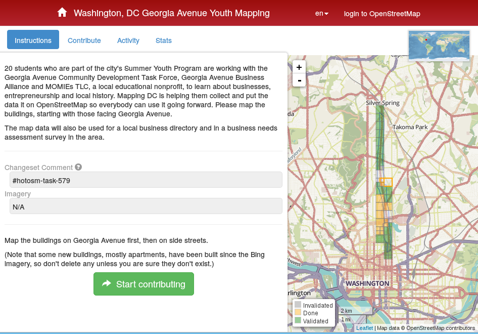
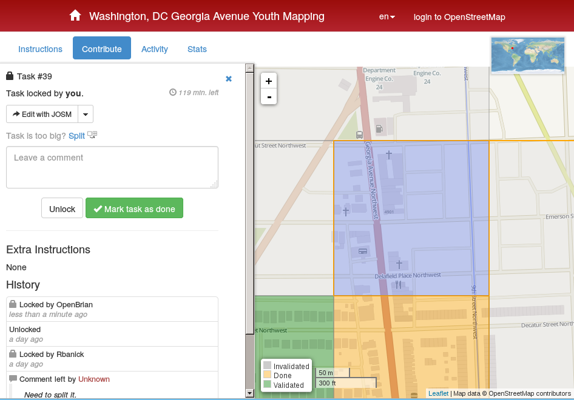
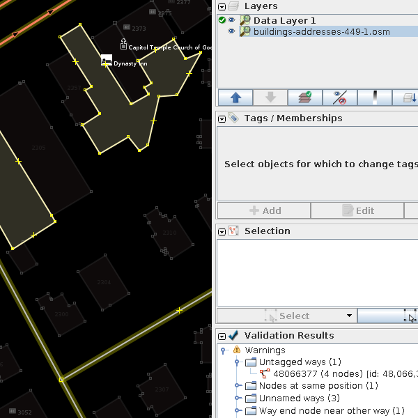
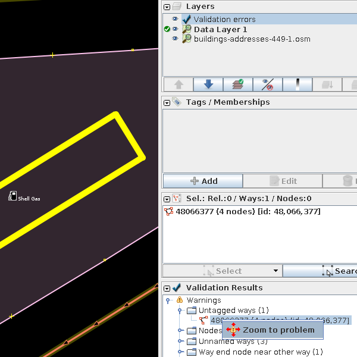
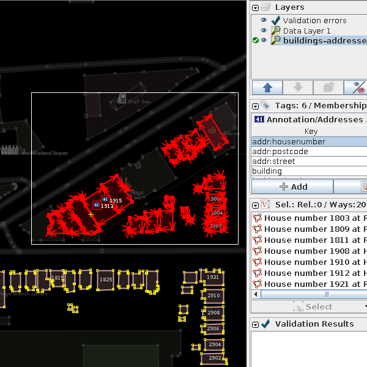
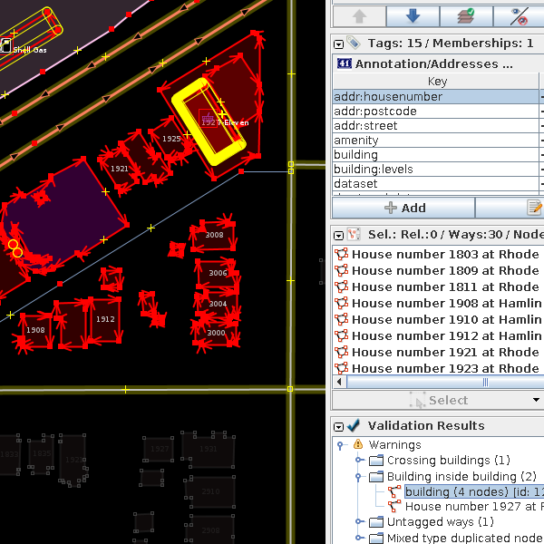

Importing with JOSM
OpenStreetMap
MappingDC
Introduction
This guide is just one part of the overall import process. Please refert to the complete
Import Process
- Process
- License
- Discussion with Community
- Documentation
- Accounts
- Tags
- Data
- Specific Data Guidelines
This guide is about the steps involved with using JOSM to import chunked data. While originally written for the DC import, it may be useful in future imports.
Get Familiar with the Basics
- Create an account for yourself at openstreetmap.org.
- Practice making small changes via JOSM.
- Install plugins like Building, and Terracing.
- Enable the Remote Control in JOSM. See Preferences. Check Download object to new layer.
- When JOSM opens, it should not ask you for an initial extent. Uncheck Open this dialog on startup.
OSM Tasking Manager

- Sign into Tasking Manager. This may delegate you to sign into OSM.
- Click Start contributing.
- Click Take a task at random.
- Click Start mapping.
OSM Tasking Manager

- TODO: If the task is too big, the convert script can be modified to produce smaller chunks.
- Click Edit with JOSM.
- JOSM will open with a chunk of work.
- We'll come back to this screen later.
JOSM

Layers
- In the top right we see 2 layers.
- Data Layer 1 is the official OSM data.
- buildings-addresses-449-1.osm is the data to be imported.
- The green checkmark is the one being worked on at the current time.
Validation
- In the bottom right we see validation for the selected layer.
- The official OSM data is sprinkeled with errors and warning.
- We are not responsible for fixing pre-existing issues, but you should know which ones exist before starting the import.
- If one feature is selected, only it will be validated.
JOSM

Validate Layers Independently
- Select nothing (press s, click blank spot)
- Validate Data Layer 1
- Click Validation
- Right click on an issue and click Zoom to Problem
- Take note of these issues
- Select the import data layer
- Click Validation
- Resolve these issues before migrating data!
JOSM

Move some features
- Select the import data layer
- Select about 20 features
- Don't select half a building
- Copy these with control-c
- Delete these with delete
- Select the OSM layer
- Paste with control-v
You can also use shift-click to select multiple features.
JOSM

Validate these
- Reselect these features and include the OSM features too!
- Click Validation
- Resolve these issues before migrating data!
- Here we see we're importing a building on top of an existing building.
Goofed up majorly, press control-z on each layer
Case Style: Resolving an overlap
Assume that the import data has better geometry, unless it looks terrible.
Resolve the tags.
| key |
OSM |
Import |
| building |
yes |
yes |
| addr:housenumber |
|
1927 |
| addr:postcode |
|
20018 |
| addr:street |
|
Rhode Island Avenue Northeast |
| dcgis:gis_id |
|
66554 |
Let's assume here, that a super OSM mapper did a better job on the geometry than the import data.
In this case we would copy the tags from the Import feature to the OSM feature
- Select the import feature.
- Select all tags you want to copy.
- Select the OSM feature.
- Pres control-shift-v (Paste Tags).
- Select the import feature and delete it.
- Select the features in the area and revalidate.
TODO: Can we get JOSM to show us this table?
Resolving issues case by case
- We will document the types of issues we will run into and use this as a reference
Case Style: Resolving nodes on lines
Case Style: Resolving ways ending near each other
/